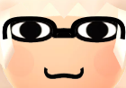
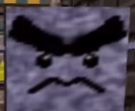
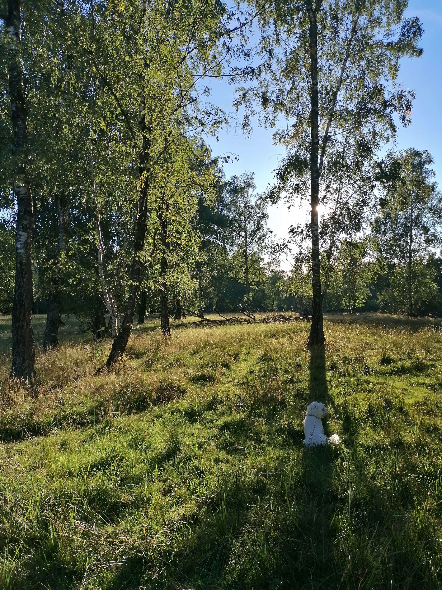
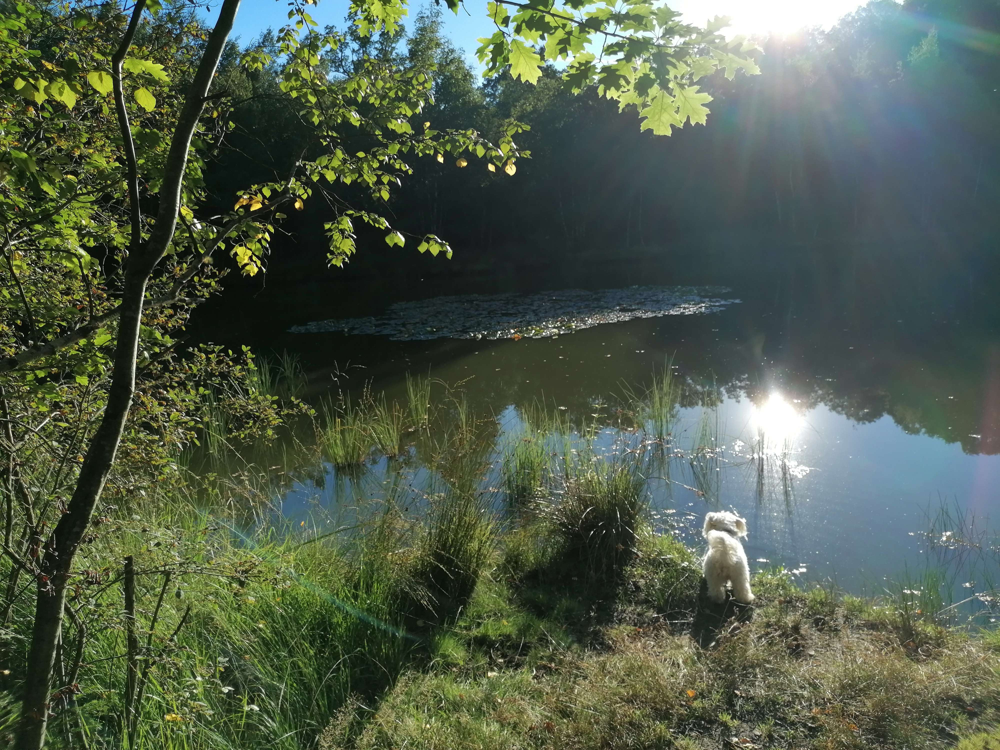

Hallo guten Tag griaß Gott servus moin und so, gell?
Tut mir leid! it been a while (>.<‘), but sometimes you just
gotta exist for an unspecified period of time, y know
(° -°)
Als ers1es: Howareyoufinesänkyou.
2weitens: OH MAH GAHHHHH, YOU
MADE IT! <(‘O_o)7 Melatonyan is great and everynyan should read it
right now. I must embarrassingly confess that I cannot relate to the
main scenario, as I haven’t been on many forums, let alone ones
where you play games together with friends. The closest I’ve come to
anything resembling this was playing Pokemon Mystery Dungeon :v. I
currently can’t yet say much abt it other than I also like gaming
and adventures are the right thing to do. I really want to brutally
criticise it and tear it apart and complain about how all of it is
just pure ideology, but I can’t (as of yet at least >:)K). Tbh, I’m
just excited whenever my friends make cool shit, its always makes me
also wanna make cool shit. Your art is ofc epic and whatnot and so
on I COMMAND YOU TO MAKE MORE (O-O) (the cloth on that Cicada panel
doe…).
Dritt3ns: I must say that I really loved that letter you sent
me last year, not just for itself, but the idea of it if found to be
really cool and interesting. It sort of ended up in me thinking
about and researching long distance communication, which also
eventually led to me writing my last semester’s thesis about that
topic (I got a perfect grade for it :)). I wanted to at least try
sth similar, but given that the place your staying (still?) isn’t
set, this was the best thing I could think of. I’m sorry it too this
long to come back to you, I don’t know how to make this point
convincingly, even to myself, but I kind of wanted to emulate the
lag that comes with sending a physical letter over a distance. I’ve
had a (kind of) penfried before, and I really like that kind of
stuff, I think I am more thoughtful in that format. You can respond
to this however you want, I’m not against chitchat per se or
anything. Basically, I’m back, or, I never really left… If you want
me to draw with you again, give you a German lesson or sth, I’m down
. On that topic…
Vi4rtens: How have you been faring in
DEUTSCHLAND? Have you not been killed by a BRETZELMANN or a
FLEISCHMETZGER yet? Do you like the grass and trees, are they to
your liking here? Personally the weather has been slaughtering me
the past weeks, I felt really immobilised by all the sudden shifts
and headache inducing humidity . Plus, the Deutsche Bahn has been
chipping away at my insanity, and given that next semester it’s
gonna be my main mode of transportation, idk how much longer I have…
hopefully you haven’t had to experience its demonic shenanigans. If
you need any survival tips, as a seasoned veteran, who has managed
to hold out for at least 24 years, I’ll alway be glad to help B^J.
Stay safe out there!
Fünften5: As I’ve told you, I’m not well
acclimated to hot climate, so for that reason summer already places
last on my seasons tier list. but this one was especially draining
to me. I don’t even think it was hotter than the last one, maybe the
opposite even, but the weather was def frantic, which made the air
more humid, and thus more oppressive on my soul. it’s almost like
you brought just a tiny littIe bit of Florida with you, really
miniscule. I felt immobilised for weeks on end. I could only muster
up enough strength to barely get all the school stuff done, aside
from that I’ve mostly bing chilling (and reading books 🤓). I’ve
also generally stayed quiet and temporarily ceased contact, with my
other friends as well, I just needed a little period of retreat. But
the point is that I’m BACK, at least I think I am, but that’s all
that counts, right? *entering fool jule*.
I tanoshimidesu to
your response and I’m gonna be stocked af. :)
LG
JUL€
have some sick forest pics B)

